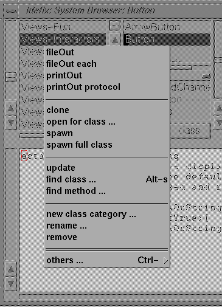
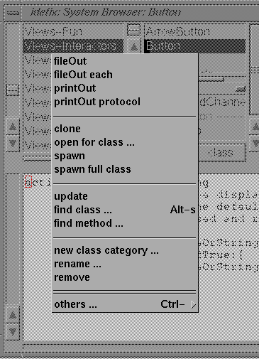
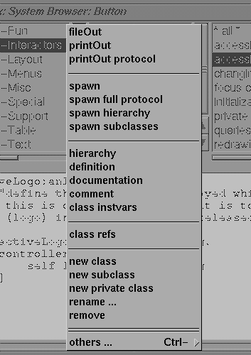
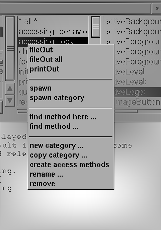
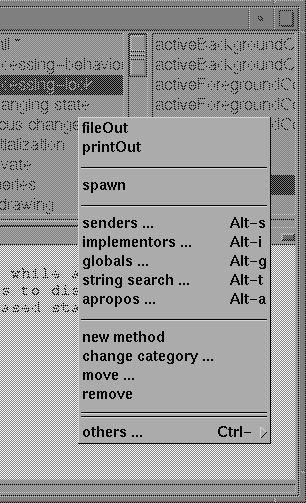
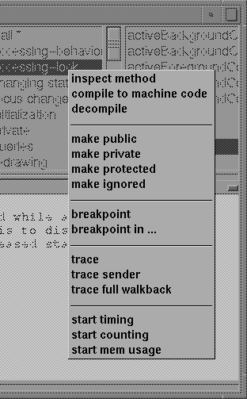

![[prev]](../../../icons/DocsLeftArrow.gif)
![[up]](../../../icons/DocsUpArrow.gif)
![[next]](../../../icons/DocsRightArrow.gif) Each of the views provides its own middle button popup menu - activated by
pressing the middle mouse button (the right button if you use a 2-button mouse).

Each of the views provides its own middle button popup menu - activated by
pressing the middle mouse button (the right button if you use a 2-button mouse).

Class category lists menu
The class category list provides the following menu functions:
If the others item is selected,
or if the "Control"-key is pressed simultaneously,
another menu pops up, offering less frequently used functions:
![[class category ctrl-menu hardcopy]](../../../pictures/SystemBrowserMenuClassCategoryCTRL.gif)
Class category lists CTRL-menu
- fileOut
- save all classes in the currently selected
class category into one big source file.
The file will be named
"categoryName.st"
and contain the code such that it can be
reloaded later or moved to another system
(see the FileBrowser's
fileIn
function).
The format in which the code is saved is compatible
to Smalltalk-80's fileOut format.
The file is created in the current project-directory (see
projects ).
- fileOut each
- save all classes, but put each class into a
separate file, named
"className.st".
Having classes in separate source files is required if the
classes are to be compiled later by stc (for machine code),
or for archival into some source repository.
The files are created in the current projects fileout directory - by default,
this is the current directory. (see projects )
- printOut
- sends a printed representation of all classes
in the selected category to the printer.
The printout may become long and includes each methods source code.
- printOut protocol
- sends a short protocol-only printed representation
of all classes in the selected category to the
printer. This printout will not include the methods
full source code - instead only the methods selector and the first comment
found in the method is printed.
This format is very valuable for
documentation purposes
(if your methods were written with a short descriptive comment at the beginning).
- clone
- opens a new browser, showing the same class/method as
currently selected. Quite useful for excursions.
- open for class
- opens a new browser after asking for the class.
Quite useful for excursions.
- spawn
- starts a class category browser on the currently
selected class category.
This is a browser without the class category list.
In practice, this type of browser is seldom used.
- spawn full class
- starts a full class browser.
A full class browser allows editing a classes complete
code in one view. This is very handy, if changes
to many methods are to be done - especially if those
changes depend on each other
(for example, to globally rename a methods selector or a variables name).
- update
- will rescan all classes in the system and update the lists shown.
Normally, the systemBrowser tries to keep track of changes done by
other parts of the system; however, there are situations, in which the browser
does not get notified of these changes and needs a manual update.
- find class
- pops up a box to enter the name of a class.
This class will be searched for and shown in this browser.
The entered string may include wildcard characters.
For example, it is possible to search for all classes
containing the substring "Collection" in their name by
entering "*Collection*".
The box performs classname completion ("Tab" key)
so you don't have to enter the full name.
No action is performed, if the entered class does not
exist.
- find method
- pops up a box to enter the name of a selector.
The implementors of this message are searched for,
and, if only one found, the method is immediately displayed.
If there are multiple implementors, a popup box allows
the class to be selected.
Both the selector box and the class box
perform name completion ("Tab" key).
No action is performed, if the entered selector is nowhere implemented.
This is a very useful function when you remember
a methods name or part of it. Basically, it performs a function similar
to the implementors function, but displays the method in the
current browser (instead of opening a new one).
- new class category
- allows creation of a new class category.
Notice, that the new category will become persistent only after a class has
been created with that category.
- rename
- rename a category. This will change the class category
attribute of all classes in the currently selected
class category.
- remove
- remove all classes (& subclasses) in the current class
category. You will be warned by a popup box which has
to be answered positively, for the deletion to be
actually performed.
Control menu functions
- fileOut each binary
- like fileOut each, but saves the classes in binary format.
This format is portable across machines, iff no primitive code is contained
OR the target system supports dynamic compilation to machine code.
- repository history
- Display a history of changes made to the source code repository.
You have to enter a starting date - all changes made since that date
will be listed.
Of course, you have to have the sourceCodeManagement facility running for this
to work (which is only provided with the full commercial release).
- checkin each
- Check every changed class in the current category back into the
source code repository. Unchanged classes do not affect the repository.
Of course, you have to have the sourceCodeManagement facility running for this
to work (which is only provided with the full commercial release).

Class lists menu
Most functions in the class lists popupmenu affect the currently selected class.
It provides the following operations:
If the others item is selected,
or if the "Control"-key is pressed simultaneously,
another menu pops up, offering less frequently used functions.
![[class ctrl-menu hardcopy]](../../../pictures/SystemBrowserMenuClassListCTRL.gif)
Class lists CTRL-menu
- fileOut
- save the currently selected classes source code
in a file named
"className.st".
The file is created in the current project directory.
- printOut
- send the currently selected classes source code to the printer.
- printOut protocol
- send the currently selected classes protocol
description to the printer. This output will contain
the class description, class comment and the classes
protocol. For each method, the selector and the methods description
is printed in a format that is very valuable for documentation purposes
(if your methods were written with
a short descriptive comment at the beginning).
- spawn
- start a single class browser on the currently selected
class (try and see)
If the codeview has a valid className highlighted
(i.e. selected), a browser is spawned on that class.
- spawn full protocol
- start a full protocol browser on the currently selected
class. A full protocol browser shows all messages understood by a class (try and see).
If the codeview has a valid className selected,
a hierarchy browser is spawned on that class.
- spawn hierarchy
- start a hierarchy browser on the currently selected
class, all of its superclasses and all subclasses.
If the codeview has a valid className selected,
a hierarchy browser is spawned on that class.
- spawn subclasses
- start a browser on all subclasses of the currently
selected class.
(this includes subclasses of subclasses etc).
If the codeview has a valid className highlighted,
a subclass browser is spawned on that class.
- hierarchy
- show the hierarchy of the currently selected class in
the code view. If the class-toggle is pressed, the
metaclass hierarchy is shown.
- definition
- shows the classes definition in the codeview.
Editing the definition and accepting in the code view
allows changing the classes definition (i.e. inheritance, instance variables
and category).
- comment
- shows the class comment in the code view.
Editing the comment and accepting allows changing the classes comment.
- class instvars
- shows the classes class-instance-variables in the code
view.
Editing and accepting in the code view allows
changing the classes instance variables.
Do not confuse class-instance-variables with class-variables -
see the Smalltalk language documentation for this.
- class refs
- searches for uses of the selected class, and
opens a browser on all referencing methods.
This is the same as the
globals function in
the method-menu; it has been added for the convenience
of ST-80 users.
- variable search
- this entry provides access to a submenu offering
searches for different variable references.
After the search, another browser showing all methods
referencing the variable of interest.
The search can be for any reference or modifying references.
You may either search locally (in the selected class only)
or over the whole tree of subclasses.
You may use wildcards when searching.
Notice, that this search may take some time, the system
has to parse the source of all involved methods to find
these accesses.
If no method is found referencing the variable, the
Transcript
will show a short message ("none found").
Starting with release 2.10.4 this menu function is now found in
the new ``variable list'' subview.
- new class
- shows a new class definition prototype in the code view.
You should edit this template, by changing the classes
name and filling in the instanceVariables and/or classVariable names.
accepting in the code view will actually create the
new class.
- new subclass
- same as new class, but the offered class definition
will be for a subclass of the currently selected class.
- rename
- change the name of the currently selected class.
Since this class may be referenced by other code in the
system, all references to that class are searched for
and shown in another browser - you should then decide
if those references should be changed or not
(edit those references and accept in this new
browsers code view).
- remove
- will remove the currently selected class and all of its
subclasses. You will get a chance to cancel, if
you changed your mind.
Control menu functions
- fileOut binary
- like fileOut, but saves the class in binary format.
This format is portable across machines, iff no primitive code is contained
in any method.
If there is primitive code in any method,
the target system must support dynamic compilation to machine code
in order to be able to load that binary.
- inspect class
- Launch an inspector in the class object (to look at class instance variables)
This can be also done by typing in the name of the class and inspecting it;
however, most of us are lazy ...
- inspect instances
- Launch an inspector in the collection if all instances.
Sometimes useful when debugging ...
- primitive definitions
- Display the classes primitive definitions section (if it has any).
- primitive variables
- Display the classes primitive variables section (if it has any).
- primitive functions
- Display the classes primitive functions section (if it has any).
- source container
- Display and allow changing the classes source container in the repository.
You have to have the sourceCodeManagement facility running for this
to work.
- remove source container
- Removes a classes source container from the repository.
You have to have the sourceCodeManagement facility running for this
to work.
- revision log
- Display the classes revision log in the repository.
You have to have the sourceCodeManagement facility running for this
to work.
- compare with repository
- Compare the class with any revision log in the source code repository.
You have to have the sourceCodeManagement facility running for this
to work.
- check into repository
- Update the repository by checking in the class into the repository.
You have to have the sourceCodeManagement facility running for this
to work.
- fileIn from repository
- Load any version from the repository. A Dialog asks for the version to load.
You have to have the sourceCodeManagement facility running for this
to work.

Method category list menu
The method category list provides the following menu functions:
- fileOut
- save the currently selected method categorys source
code in a file named
"className-category.st".
The file is created in the current project directory.
Not very useful - except to transfer parts of a class
to others.
- fileOut all
- save all methods (from all classes) which have the same category as the
currently selected method category in a file named
"category.st".
The file is created in the current project directory.
If you use unique method categories for individual projects,
this allows easy fileOut of all methods belonging to that project.
- printOut
- print all methods of the currently selected category.
- spawn
- start a method category browser on all methods in the selected category (try and see).
- spawn category
- start a browser on all methods (i.e. of all classes)
which have the same method category as the currently
selected one (try and see).
- find method here
- allows searching for the method implementing a selector.
The selector has to be entered into a box - wildcards
are allowed.
No action is performed, if there is no method
implementing that selector.
- find method
- same, but searches up in the class hierarchy for the
first class implementing the selector. This answers the
question "when I send #foo to instances of this class,
which method gets evaluated ?"
No action is performed, if there is no method
implementing that selector.
- new category
- addes a new category to the list. For this new category
to become persistent, at least one method must exist
with this category attribute.
- copy category
- allows copying all methods within another classes category to
the currently selected class. You can specify wildcards
in the category name.
For example, entering
"*" as category, will copy all methods from
the other class. This function is very useful if you want to clone a class
(for example, to experiment with a modified system class).
- create access methods
- creates methods to access instance variables. This menu item is only shown when a classes
instance protocol is visible (turn on the ``instance'' toggle).
For each instance variable foo, two methods are created:
#foo - which returns this instance variable
and:
#foo: - which sets this instance variable
This function is non-destructive: if a method by that
name already exists, it is not overwritten or changed.
- create documentation stubs
- creates empty documentation methods in the classes documentation protocol.
This menu item is only shown when a classes
class protocol is visible (turn on the ``class'' toggle).
We highly recommend you to always add documentation methods
- you yourself and others will appreciate that later ;-)
- rename
- rename the method category
- remove
- remove all methods (in the currently selected class only)
which are members of the selected method category.
You will be asked to confirm before the remove is actually performed.

Method lists menu
The method list offers the following menu functions:
If the others item is selected,
or if the "Control"-key is pressed simultaneously,
another menu pops up, offering less frequently used functions.

Method lists CTRL-menu
- fileOut
- save the currently selected method in a file named
"className-selector.st".
The file is created in the current project directory.
Not very useful - except to transfer individual methods
to others.
- printout
- send a printed representation of the currently selected
method to the printer.
- spawn
- start a browser for editing the selected method.
This is seldom used;
however, if a string of the form "classname » selector"
is currently selected in the codeview,
a browser is opened on that method instead.
Many method comments contain this kind of cross-reference in a comment
to allow quick excursions to related parts of the system.
- senders
- starts a new browser on all methods sending a specific
message. The message selector must be entered in a box;
however, the box offers a reasonable default,
which is the current methods selector or the selection in the code view.
If the code views selection consists of a code fragment, the browser tries to extract
the selector (try & see).
You may also enter a string containing a search pattern.
(Try it with the pattern: "*[pP]ut*".)
This is highly useful, if you only remember a part of a selector.
- implementors
- starts a new browser on all methods implementing a
specific message.
The same selection and search mechanism as in "senders" is used.
- globals
- starts a new browser on all methods accessing a global
The same selection and search mechanism as in "senders" is used.
- string search
- starts a new browser on all methods where some sub-string is found in the source.
Since all methods sourcecode has to be processed, this may take a while, if the number of
consulted classes is big.
- apropos
- starts a new browser on all methods where some keyword is found in the selector or comment.
Since all methods sourcecode has to be processed, this may take a while, if the number of
consulted classes is big..
- new method
- shows a method template in the code view.
You should edit this template and accept in the code view.
Actually, this template is simply a reminder on method syntax.
To create a method,
it is sufficient to accept in the code view with any method category
selected. (i.e. just edit and accept)
Typically new methods are created by copying some existing
code into an empty codeview,
then the selector and code are modified as needed,
and finally accepted.
- change category
- allows putting the currently selected method into another category
(i.e. change the category of the selected method)
- remove
- removes the currently selected method. No confirmations are asked for.
- move
- moves the currently selected method to some other class. The class is to be entered
into an entryBox. For example, this is useful, to move some method to a superclass.
Control menu functions
- inspect method
- Launch an inspector on the selected method.
This is probably only useful for ST/X developers to debug internals.
- compile to machine code
- Call the stc compiler to generate an optimized machine code
version of this method. Notice, that this is NOT related to just-in-time compilation,
which is done automatically. Instead, this calls for the stc compiler,
to generate a machine code file and loads the resulting module into the system.
Stc generated code typically runs faster than just-in-time compiled
or interpreted code.
This menu function is only available on systems which allow for machine code
to be dynamically loaded (and non-demo versions, where the stc compiler
is part of the delivery).
- decompile
- Show the bytecode of the method as a symbolic ``disassembly''.
This is probably only useful for ST/X developers to debug internals.
- make public
- allow everyone to invoke this method (public access).
- make private
- allow this method to only be invoked by methods from within that class(private access).
If invoked by others, an exception will be raised at runtime.
This is useful during development, to make certain that private methods
are not invoked by other team members.
Be aware, that private methods limit the reusability of code - therefore, this is
a very soft atribute, which is easily changed to public.
However, you must do that actively - being reminded of what you do.
- make protected
- allow this method to only be invoked by methods from within that class and subclasses (protected access).
Like above, if invoked by others, an exception will be raised at runtime.
- make ignored
- ignore this method with respect to message lookup - i.e. the system behaves
as if this method was removed. A send of the corresponding selector will lead
to a doesNotUnderstand exception (or a superclasses method to be invoked).
Useful to temporarily disable a method, or to remove a method but keep its
code as documentation.
- breakpoint
- sets a breakpoint on the selected method.
The debugger will be entered, whenever a breakpointed method is about to be executed.
A single step or continue will then actually start execution of the method.
- breakpoint in ...
- sets a breakpoint on the selected method, which is only triggered, if that
method is invoked by a particular process. A popup box opens up to allow for the
process to be selected.
Use this, if you want a breakpoint to be placed upon a method which is also
used by the system or other processes, and others should not be affected by
breakpoints. For example, if some View method is to be breakpointed.
- trace
- turns on tracing of the selected method.
Traced methods will output some information on the standard-error
(Stderr) both on entry and exit.
To trace into a file, Stderr can be set to some fileStream opened for writing.
- trace sender
- turns on sender-tracing of the selected method.
Like trace,
but only a short note identifying the sender of
the method will be written to Stderr.
- trace full walkback
- Like trace, but dumps a full walkback to Stderr.
- remove break/trace
- remove breakpointing or tracing of the selected method.
Any trace- or breakpoint is also removed,
whenever the current method is recompiled (i.e. accepted).
- start/stop timing
- install/deinstall a statistic wrapper, which monitors the execution
time of the method.
The min/max and average times are shown in the browser - but that display is only
updated, if you click on the item again (to avoid flicker ...).
- start/stop counting
- install/deinstall a counter to be incremented whenever the method is invoked.
The current count is shown in the browser - but that display is only
updated, if you click on the item again (to avoid flicker ...).
- start/stop memory usage statistics
- install/deinstall a memory usage statistic on the selected method
The amount of memory allocated by the method and all methods called by it
will be displayed in the browser. No automatic update is performed - click on the
methods item again, to get an update.
Doc $Revision: 1.20 $ $Date: 2016-11-05 17:38:36 $